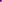

| Keeping Up Appearances |
Appearance Nodes
OK. As you saw with the FBOX object we defined earlier, a Shape node has a field within it called appearance. This is used to contain an Appearance node, as shown below:
DEF FBOX Shape {
appearance Appearance {
material Material {
}
}
geometry Box {
}
}
This example has one field within its Appearance node, a material field. This way of having nodes within nodes may seem awkward, but it allows you to globally define appearances by using DEF and USE. This is useful for having many objects with the same look. An Appearance node can contain a material field or a texture field. A material field contains a Material node, surprisingly enough. A texture node contains one of a number of kinds of texturing nodes. These will be described later. First, we will deal with the Material node.
Material Nodes
The Material node can contain any of six fields. These are:
The first three of these are colour values, and the last three are a single number between 0 and 1. Colours are specified as red green and blue components, as in HTML. You can make any colour you like from a combination of red, green and blue. The individual colour values are numbers between 0 (no colour) and 1 (full colour), so full red would be defined as 1 0 0, white as 1 1 1, grey as 0.5 0.5 0.5 and so on. This way of specifying colours can take a while to get used to, but you can use a colour selector in PaintShop Pro or something to pick out colours that you like and then convert them into VRML values.
So, if we want to make our original cube a glowing semi-transparent green colour, we would define an appearance for it thus:
Shape {
appearance Appearance {
material Material {
emissiveColor 0 0.8 0
transparency 0.5
}
}
geometry Box {
}
}
ImageTexture
Pretty colours are all very well, but to look really good, we need to texture-map our objects. This is done using the texture field of the Appearance node. This field contains one of three types of texture node.
The first one of these that we will cover is ImageTexture. This is a basic texture map, mapping a still image onto an object. The node can texture-map an object with a JPEG or PNG file, so no GIFs round here! Some browsers support it, but it's not standard. The node contains three fields. The first, url specifies the image to use in a standard URL format. You can specify a list of images in square brackets, and the browser will display the first one in the list that it finds. The other two fields are repeatS and repeatT, which govern whether the texture repeats in the horizontal (S) direction or in the vertical (T). These take boolean values of TRUE or FALSE. They are only really useful when combined with a TextureTransform, which we won't cover until later on. You can specify transparency information in the images used, in which case it replaces the original object's transparency. If you use a greyscale texture, the diffuseColor is multiplied by the intensity of the texture to create the actual texture. In fact, you can create many effects by combining a Material node and an ImageTexture. In general, they do just what you'd expect, so experiment a little and see what you can create.
So, to texture our second Box with a brick texture, we would use the following:
Appearance {
texture ImageTexture {
url "brick.jpg"
}
}
as the appearance node of our second box.
MovieTexture
MovieTexture takes a MPEG movie and texture-maps it onto an object in the same way as ImageTexture It has the same three fields, but also a number of others. These are:
This node allows you to define your own textures by hand in the VRML file. This seems incredibly inefficient, but it does have it's uses, as you'll see later. It has an image field instead of a URL.
The image field consists of two numbers specifying the width and height of the texture, followed by another number giving the number of components. One-component colours are greyscale, two-component colours are greyscale with transparency, three is RGB colour, and four is RGB with transparency. After these arguments, there follows a list of pixels, which are hexadecimal numbers with the one byte per component. So, a 4-component pixel that is red and 50% transparent would be 0xFF00007F. The pixels are ordered from bottom-left to top-right. An example is shown below:
DEF PIXMAP Appearance {
texture PixelTexture {
image 2 2 3 0xFF0000 0x00FF00 0x0000FF 0xFF0000
}
}

We just need a quick description of hexadecimal numbers here. Often in computer-land, it's convenient to specify numbers not in normal decimal numbers (0-9) or binary (0-1), but in another type of number called hexadecimal. This is base 16, and the numbers go like this:
| Hexadecimal | Decimal |
| 0 | 0 |
| 1 | 1 |
| 2 | 2 |
| 3 | 3 |
| 4 | 4 |
| 5 | 5 |
| 6 | 6 |
| 7 | 7 |
| 8 | 8 |
| 9 | 9 |
| A | 10 |
| B | 11 |
| C | 12 |
| D | 13 |
| E | 14 |
| F | 15 |
So, F in hexadecimal is 15 in decimal. 10 in hex is 16 in decimal. Hexadecimal numbers are normally specified with a 0x on the front for easy recognition. So, 0x10 = 16, 0xFF = 255, and 0x7F = 127. You get the idea, I'm sure. You don't need to use these much, so don't worry about it too much if you don't. You can pick it up later.
The End is NighRight then, that's about it for this one, all that remains is the description and the code for what we have so far, and a link to the WRL file. We have two boxes as before, one transparent green, and another with a brick texture. Notice that we can't use DEF on the Shape nodes any more, as they have different textures, so are no longer identical.
Take a look at the overall effect by clicking here:
Tutorial 1.4 World.
That's the basics of colour and texture. There's more advanced info on textures later on, with different ways of mapping them, and so on but that comes later. A lot later.